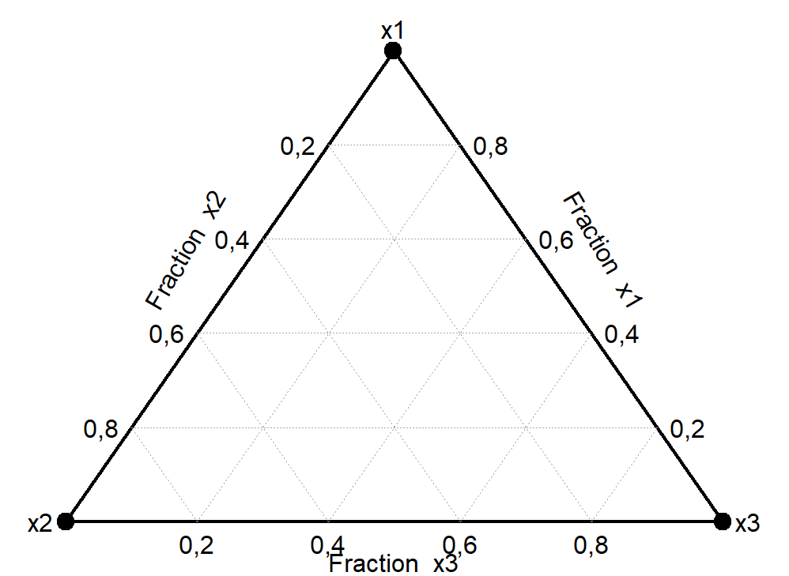

8 Experimentos para Misturas
8.1 Introdução
Os planejamnetos fatoriais e de superfície de resposta possibilitam a inferência, modelagem e otimização considerando variáveis contínuas ou de processo. Tais variáveis incluem temperatura, pressão, velocidade, entre outras. Em procedimentos experimentais e processos onde deseja-se avaliar o efeito da proporção de dois ou mais componentes (reagentes ou ingredientes) existem planejamentos específicos para não somente avaliar a influência da proporção de cada componente na resposta, mas também visando obter a proporção ótima dos componentes. Tais experimentos são comuns na indústria química, farmacêutica, de alimentos, civil, entre outras. Estes experimentos são chamados de experimentos de misturas. Pretende-se neste capítulo elucidar as particularidades relacionadas a este tipo de experimento, os planejamentos disponíveis e como realizar a modelagem e otimização.
Neste capítulo são utilizados os pacotes mixexp, ggtern, Ternary e NlcOptim, além das funções básicas do R. Recomenda-se a instalação destes utilizando o comando install.packages("<nome_pacote>"). A instalação é realizada uma única vez, porém o pacote deve ser carregado via library(<nome_pacote>) sempre que deseja-se usar suas funções.
8.2 Trabalhando com proporções de componentes
Quando trabalhamos com experimentos de misturas tem-se as seguintes restrições:
\[ \begin{align} &0 \leq x_i \leq 1 \text{, } i=1\dots,q \\ &\sum_{i=1}^q x_i =1, \end{align} \]
ou seja, obviamente cada um dos \(q\) componentes deve ter proporção entre 0 e 1 e a soma da proporção dos \(q\) componentes deve ser unitária. Pode-se inferir que \(x_j = 1 -\sum_{i \neq j}x_i\), ou seja, é possível saber a proporção de um componente caso saiba-se a proporção dos \(q-1\) remanmescentes. Neste sentido, há uma redundância moderada entre as proporções dos componentes em planejamentos para misturas.
8.3 Polinômios canônicos de misturas
Nos experimentos de misturas devido as restrições relacionadas à proporção de componentes, os modelos obtidos apresentam características especiais. Seja um modelo linear exposto à seguir.
\[ \begin{align} \hat y =& \beta_0^* + \beta_1^*x_1 + \beta_2^*x_2 + \dots + \beta_q^*x_q \\ \hat y =& \beta_0^* + \sum_{i=1}^q \beta_i^*x_i\\ \end{align} \]
Sabendo que \(\sum_{i=1}^q x_i =1\), pode-se fazer o seguinte:
\[ \begin{align} \hat y =& \beta_0^*\underbrace{\sum_{i=1}^q x_i =1}_1 + \sum_{i=1}^q \beta_i^*x_i \\ \hat y =& \sum_{i=1}^q\underbrace{(\beta_0^* + \beta_i^*)}_{\beta_i}x_i\\ \hat y =& \sum_{i=1}^q \beta_ix_i. \end{align} \]
Pode-se observar que devido a restrição de soma unitária das proporções o modelo linear pode ser representado sem a constante ou, pode-se dizer que devido a redundância nas proporções dos componentes, o coeficiente \(\beta_i\) consiste não somente no efeito linear, mas na constante ou intercepto no vértice \(i\), \(i=1,\dots,q\).
Seja um modelo de segunda ordem completo, conforme segue.
\[ \hat y = \beta_0^* + \sum_{i=1}^q \beta_i^* x_i + \sum_{i=1}^q \beta_{ii}^* x_i^2 + \sum_{i < }\sum_j \beta_{ij}^* x_i x_j \tag{8.1}\]
Usando \(\sum_{i=1}^q x_i =1\) e \(x_i^2 = x_i\underbrace{(1 -\sum_{x \neq q}x_i)}_{x_i}\), obtém-se:
\[ \hat y = \sum_{i=1}^q \beta_i x_i + \sum_{i < }\sum_j \beta_{ij} x_i x_j, \tag{8.2}\]
onde \(\beta_i = \beta_0^* + \beta_j^* + \beta_{jj}^*\) e \(\beta_{ij} = \beta_{ij}^* - \beta_{ii}^* - \beta_{jj}^*\). Logo, dada a redundância nas proporções, um modelo de segunda ordem completo pode ser rezumido a um modelo com termos lineares e de interação. Entretanto, deve-se atentar que em tal modelo o termo linear abrange também a constante e o termo quadrático, enquanto o termo de interação é função dos termos de interação originais e quadráticos.
Em modelos de misturas a multicolineariedade entre os componentes ocasionada pela restrição de soma unitária pode inflar \(R^2\) e dar uma impressão errada da capacidade de previsão do modelo. Logo, o coeficiente de determinação múltipla deve ser corrigido considerando o número de termos no modelo conforme ?eq-r2corr, onde \(p\) é o número de termos no modelo.
\[ R^2_{corr} = 1 - \biggl(\frac{(1-R^2)(N-1)}{N-p-1} \biggr) \]
8.4 Sistema de coordenadas simplex
Considerando as restrições relacionadas à proporção de componentes em uma mistura, é importante entender o sistema de coordenadas simplex, utilizado em experimentos para misturas. A Figura 8.1 ilustra o sistema de coordenadas simplex para \(q=3\) componentes. O sistema de coordenadas neste caso consiste em um triângulo equilátero com cada um dos vértices representando a proporção máxima de um dos componentes, ou seja, no vértice superior tem-se proporção máxima de \(x_1\), isto é, \(x_1=1\) e \(x_2=x_3=0\). No vértice da esquerda tem-se proporção máxima de \(x_2\), enquanto no vértice da direita tem-se proporção máxima de \(x_3\).
A Figura 8.2 plota três pontos distintos no sistema de coorenadas simplex para \(q=3\). Seja \(\mathbf x = (x_1,x_2,\dots,x_3)\). Neste caso foram plotados os pontos \((0,6;0,2;0,2)\) em vermelho, \((0,3;0,6;0,1)\) em azul e \((0,4;0,3;0,3)\) em verde. Neste gráfico os vértices e linhas de grade estão identificados em porcentagem.
8.5 Planejamento simplex-lattice
Um planejamento muito usual para misturas é o planejamento simplex-lattice ou rede simplex. Um planejamento simplex-lattice com \(q\) componentes e grau \(m\) pode ser denotado SLD(\(q\),\(m\)), onde \(m\) consiste no grau do polinômio de misturas a ser obtido. Neste planejamento o número total de experimentos para uma réplica pode ser calculado conforme segue:
\[ N=\binom {q+m-1}{m}=\frac{(q+m-1)!}{m!(q-1)!}. \]
Um SLD(3,1) apresentará N = 3 experimentos, sendo representado conforme Figura 8.1, enquanto um SLD(3,2) apresentará N = 6 experimentos, conforme Figura 8.3. Os pontos nos vérticies são chamados de misturas puras, enquanto os pontos nas arestas são chamados de misturas binárias. Enquanto um SLD(3,1) permite a obtenção de um modelo na forma da Equação 8.1, um SLD(3,2) permite a obtenção de modelo na forma da Equação 8.2. A Tabela Tabela 8.1 apresenta um SLD(3,2).
| x1 | x2 | x3 |
|---|---|---|
| 1.0 | 0.0 | 0.0 |
| 0.5 | 0.5 | 0.0 |
| 0.0 | 1.0 | 0.0 |
| 0.5 | 0.0 | 0.5 |
| 0.0 | 0.5 | 0.5 |
| 0.0 | 0.0 | 1.0 |
É importante observar também que em um planejamento simplex-lattice o grau é o contrário do espaçamento \(\delta\) entre os pontos no espaço simplex ou, de forma análoga, \(\delta = 1/m\). Logo, para \(m=2\), \(delta = 1/2\), o que fica claro na Figura 8.3, uma vez que o comprimento da aresta é unitário. Para finalizar, a Figura 8.4 ilustra um SLD(3,3). Pode-se observar que neste caso N = 10 e \(\delta = 1/3\). O ponto que consiste em proporção de 1/3 para todos os três componentes é chamado de mistura ternária.
Exemplo 8.1 Seja um experimento de misturas onde deseja-se otimizar a proporção de fibras naturais como reforço em um compósito. Foram utilizados três tipos de fibra: sisal (x1), juta (x2) e coco (x3). Foi utilizado um planejamento SLD(3,2). A resposta avaliada foi a tensão específica de ruptura e foram realizadas três réplicas.
A Tabela 8.2 expõe o planejamento SLD(3,2) com a resposta. O código abaixo é usado para obter tal planejamento. O pacote mixexp é sugerido para análise de experimentos de msituras e o comando SLD é usado para obter um planejamento simplex-lattice.
# simplex lattice com q = 3, m = 2
plan.simplex <- SLD(3,2)
# plan.simplex
# Desenho do planejamento
# DesignPoints(plan.simplex)
# planejamento foi replicado tres vezes
plan.simplex <- rbind(plan.simplex,
plan.simplex,
plan.simplex)
# resposta
y <- c(28.56, 21.73, 26.38, 33.71, 24.22, 22.93,
29.58, 20.98, 25.9, 32.98, 23.98, 21.79,
29.26, 21.23, 26.65, 34, 23.15, 22.17)
plan.simplex$SBS <- y| x1 | x2 | x3 | SBS | |
|---|---|---|---|---|
| 1 | 1.0 | 0.0 | 0.0 | 28.56 |
| 2 | 0.5 | 0.5 | 0.0 | 21.73 |
| 3 | 0.0 | 1.0 | 0.0 | 26.38 |
| 4 | 0.5 | 0.0 | 0.5 | 33.71 |
| 5 | 0.0 | 0.5 | 0.5 | 24.22 |
| 6 | 0.0 | 0.0 | 1.0 | 22.93 |
| 11 | 1.0 | 0.0 | 0.0 | 29.58 |
| 21 | 0.5 | 0.5 | 0.0 | 20.98 |
| 31 | 0.0 | 1.0 | 0.0 | 25.90 |
| 41 | 0.5 | 0.0 | 0.5 | 32.98 |
| 51 | 0.0 | 0.5 | 0.5 | 23.98 |
| 61 | 0.0 | 0.0 | 1.0 | 21.79 |
| 12 | 1.0 | 0.0 | 0.0 | 29.26 |
| 22 | 0.5 | 0.5 | 0.0 | 21.23 |
| 32 | 0.0 | 1.0 | 0.0 | 26.65 |
| 42 | 0.5 | 0.0 | 0.5 | 34.00 |
| 52 | 0.0 | 0.5 | 0.5 | 23.15 |
| 62 | 0.0 | 0.0 | 1.0 | 22.17 |
A análise a seguir com o comando MixModel permite a obtenção do modelo completo. Observa-se que apenas o termo \(x_2x_3\) não foi significativo e que o ajuste foi excelente. Caso seja usado model = 1, será obtido um modelo com apenas os termos lineares.
res.comp <- MixModel(frame = plan.simplex,
response = "SBS",
mixcomps = c("x1", "x2", "x3"),
model = 2)
coefficients Std.err t.value Prob
x1 29.13333 0.2877756 101.236276 0.000000e+00
x2 26.31000 0.2877756 91.425392 0.000000e+00
x3 22.29667 0.2877756 77.479342 0.000000e+00
x2:x1 -25.63333 1.4098069 -18.182159 4.230261e-10
x3:x1 31.39333 1.4098069 22.267825 3.966427e-11
x2:x3 -2.08000 1.4098069 -1.475379 1.658606e-01
Residual standard error: 0.498442 on 12 degrees of freedom
Corrected Multiple R-squared: 0.9908558Caso seja desejado especificar um modelo distinto, por exemplo sem o coeficiente não significativo, pode-se usar o comando lm. É importante suprimir a constante neste caso, com -1 na fórmula.
# Modelo reduzido
res.red <- lm(SBS ~ -1 + x1 + x2 + x3 + x1*x2 + x1*x3,
data = plan.simplex)
summary(res.red)
Call:
lm(formula = SBS ~ -1 + x1 + x2 + x3 + x1 * x2 + x1 * x3, data = plan.simplex)
Residuals:
Min 1Q Median 3Q Max
-0.98000 -0.30917 0.06833 0.37333 0.80667
Coefficients:
Estimate Std. Error t value Pr(>|t|)
x1 29.1333 0.3005 96.94 < 2e-16 ***
x2 26.1367 0.2743 95.27 < 2e-16 ***
x3 22.1233 0.2743 80.64 < 2e-16 ***
x1:x2 -25.2867 1.4516 -17.42 2.15e-10 ***
x1:x3 31.7400 1.4516 21.86 1.23e-11 ***
---
Signif. codes: 0 '***' 0.001 '**' 0.01 '*' 0.05 '.' 0.1 ' ' 1
Residual standard error: 0.5205 on 13 degrees of freedom
Multiple R-squared: 0.9997, Adjusted R-squared: 0.9996
F-statistic: 9266 on 5 and 13 DF, p-value: < 2.2e-16A Figura 8.5 ilustra o gráfico de contorno para o modelo reduzido. Observa-se que uma proporção próxima de 0,6 de fibra de sisal e uma proporção próxima de 0,4 para fibra de coco maximiza a resistência do compósito. O gráfico foi obtido via comando TernaryPlot da biblioteca Ternary, porém poderia ser obtido via ModelPlot da biblioteca mixexp.
# contour plot
# ModelPlot(model = res.red,
# dimensions = list(x1 = "x1",
# x2 = "x2",
# x3 = "x3"),
# contour = T,
# fill = T,
# axislabs = c("sisal", "juta", "coco"),
# color.palette = cm.colors,
# colorkey = T)library(Ternary)
par(mar = rep(0.2, 4))
TernaryPlot(alab = "sisal", blab = "juta", clab = "coco")
FunctionToContour <- function(a, b, c) {
yhat <- predict(res.red, newdata = data.frame(x1=a,
x2=b,
x3=c))
return(yhat)
# 29.133*sisal + 26.1367*juta + 22.1233*coco -
# 25.2867*x1*x2 + 31.7400*x1*x3
}
# Add contour lines
values <- TernaryContour(FunctionToContour,
# resolution = 36L,
filled = TRUE)
zRange <- range(values$z, na.rm = TRUE)
# Continuous legend for colour scale
PlotTools::SpectrumLegend(
"topleft",
legend = round(seq(zRange[1], zRange[2], length.out = 4), 3),
palette = hcl.colors(265, palette = "viridis", alpha = 0.6),
bty = "n", # No framing box
inset = 0.02,
xpd = NA # Do not clip at edge of figure
)A Figura 8.6 expõe o gráfico de efeitos para o experimento de misturas de fibras naturais. Observa-se que o eixo x apresenta-se em desvio do centróide que seria o centro do sistema de coordenadas simplex. Aumentando a proporção de \(x_1\) aumenta a resistência mecânica do compósito. Aumentando a proporção de \(x_2\) até em torno de pouco menos que 0,2 a mais que o centróide aumenta a resistência mecânica. Já para \(x_2\) a redução deste maximiza a resistência do material. Obviamente, deve-se pensar que aumentar um componente implica em reduzir ao menos um dos demais. O comando ModelEff tem duas opções Piepel ou Cox em dir=1 ou dir=2, respectivamente. Para mais detalhes ver Cornell (2011).
# Grafico de efeitos
ModelEff(nfac = 3,
mod = 2,
dir = 2,
nproc = 0,
ufunc = res.comp)Apesar de neste caso o gráfico de contorno exposto na Figura 8.5 auxiliar na definição das proporções ótimas, na maioria dos casos, especialmente onde \(q \geq 4\), é importante realizar a otimização restrita, conforme Equação 8.3. Neste procedimento deseja-se minimizar o modelo polinomial de misturas sujeito as restrições de proporção e soma unitária das proporções. A maioria dos pacotes de otimização são implementados para minimização, de forma que, caso seja desejado a maximização da função, conforme o exemplo de misturas de fibras, pode-se minimizar o negativo e depois multiplicar o resultado obtido por menos 1.
\[ \begin{align} \min_{\mathbf x} & \{\hat y = \sum_{i=1}^q \beta_i x_i + \sum_{i < j} \beta_{ij} x_i x_j\} \\ \textrm{s.t.: } & 0 \leq x_i \leq 1 \text{, } i = 1,\dots,q \\ & \sum_{i=1}^q x_i =1 \\ \end{align} \tag{8.3}\]
Para otimização de modelos polinomiais de misturas quadráticos pode-se usar métodos de programação não-linear, como a programação sequencial quadrática. O pacote NlcOptim tem a função solnl que considera este método. A seguir expõe-se a implementação do procedimento para otimização. Deve-se defirnir a função objetivo. Neste caso sugere-se usar o artifício de colocar a função predict disponível para modelos lm em uma função via function. Deve-se definir a restrição igualdade (ceq) nula, na forma \(\sum x_i - 1\). Já as proporções são definidas via limites inferiores (lower bound - lb) e superiores (upper bound - ub) em 0 e 1, respectivamente, para todos os componentes da mistura.
library(NlcOptim)
### Otimizacao nao linear restrita
# Funcao objetivo
obj <- function(x){
y_hat <- predict(res.red,
newdata = data.frame(x1 = x[1],
x2 = x[2],
x3 = x[3]))
return(-y_hat)
}
# restricao de espaco experimental
cons_eq <- function(x){
g <- x[1] + x[2] + x[3] - 1
return(list(ceq = g, c = NULL))
}
# x inicial
x0 <- c(1/3, 1/3, 1/3)
# Teste funcao objetivo e restricao
# obj(x0)
# cons_eq(x0)
# otimizacao
Opt <- solnl(X = x0,
objfun = obj,
confun = cons_eq,
lb = rep(0,3),
ub = rep(1,3))A seguir expõe-se o código para se obter as proporções ótimas dos componentes. Sugere-se 0,61 de fibra de sisal e 0,39 de fibra de coco.
# Proporcoes otimas
Opt$par [,1]
[1,] 6.104285e-01
[2,] -6.384098e-13
[3,] 3.895715e-01Por fim, obtém-se o valor ótimo previsto da resposta conforme segue. Neste caso a mistura ótima de fibras possibilitaria a obtenção de um compósito com tensão específica de ruptura de 33,95 MPa.
# resposta otima
-Opt$fn 1
33.95039 Para modelos de ordem maior sugere-se usar algoritmo genético ou outro método metaheurístico populacional, de forma a viabilizar uma busca não dependente do gradiente, uma vez que ainda serão considerados modelos de ordem maior que os quadráticos, dificultando a otimização via métodos não lineares.
8.6 Planejamento simplex-centróide
Um planejamento simplex-centróide é outra opção interessante para experimentos de misturas. Este planejamento pode ser denotado por SCD(\(q\)), onde \(q\) consiste ao mesmo tempo no número de componentes e na ordem do modelo possível de ser obtido. Um planejamento simplex centróide de ordem \(q\) apresentará:
\(\binom {q}{1}\) misturas puras;
\(\binom {q}{2}\) misturas binárias;
\(\binom {q}{3}\) misturas ternárias;
\(\vdots\)
\(\binom {q}{q} = 1\) mistura de ordem \(q\).
Logo, um planejamento simplex-centróide apresentará \(N=2^q-1\) experimentos. A Figura 8.7 ilustra um planejamento simplex-centróide para \(q=3\), SCD(3). Pode-se observar que ele contém 7 pontos, 3 misturas puras, que são os experimentos com proporção unitária de cada componente ilustrados nos vértices do planejamento, 2 misturas binárias que são combinações dois a dois com metade de cada um dos componentes envolvidos ilustrados no meio das arestas e uma mistura ternária que apresenta um terço de cada um dos três componentes, sendo ilustrada no centro do planejamento. O planejamento é exposto integralmente na Tabela 8.3.
| x1 | x2 | x3 |
|---|---|---|
| 1.0000000 | 0.0000000 | 0.0000000 |
| 0.0000000 | 1.0000000 | 0.0000000 |
| 0.0000000 | 0.0000000 | 1.0000000 |
| 0.5000000 | 0.5000000 | 0.0000000 |
| 0.5000000 | 0.0000000 | 0.5000000 |
| 0.0000000 | 0.5000000 | 0.5000000 |
| 0.3333333 | 0.3333333 | 0.3333333 |
A Equação 8.4 apresenta o polinômio geral que pode ser obtido via SCD(\(q\)). Por exemplo, para \(q=2\), só é possível obter um modelo de segunda ordem. Já para \(q=3\) é possível obter o modelo exibido antes das reticências, enquanto para \(q\geq4\) mais termos são adicionados, um para cada componente adicional considerado.
\[ \hat y = \sum_{i=1}^q \beta_i x_i + \sum_{i < }\sum_j \beta_{ij} x_i x_j + \sum_{i < }\sum_j\sum_l \beta_{ijl}x_ix_jx_l + \dots \tag{8.4}\]
Exemplo 8.2 Seja um experimento de mistura para obter um biodiesel a base de óleo vegetal e gordura animal. Os componentes da mistura são óleo de soja, sebo bovino e gordura de aves. A resposta é o período de indução no ensaio, de forma que um valor maior resulta em maior resistência à oxidação. Foi utilizado um SCD(3) para o estudo.
A Tabela 8.4 expõe o planejamento SCD(3) com a resposta. O código abaixo é usado para obter tal planejamento. O comando SCD é usado para obter o planejamento.
# simplex centroide, q = 3
plan.centroide <- SCD(3)
# replicando ponto central
plan.centroide <- rbind(plan.centroide,
plan.centroide[7,],
plan.centroide[7,],
plan.centroide[7,])
# desenho planejamento
# DesignPoints(plan.centroide)
# Resposta
IP <- c(3.76, 9.57, 9.77, 8.19, 7.92, 12.92,
10.04, 9.27, 10.07, 9.35)
# adicionando resposta ao planejamento
plan.centroide$y <- IP| x1 | x2 | x3 | y | |
|---|---|---|---|---|
| 1 | 1.0000000 | 0.0000000 | 0.0000000 | 3.76 |
| 2 | 0.0000000 | 1.0000000 | 0.0000000 | 9.57 |
| 3 | 0.0000000 | 0.0000000 | 1.0000000 | 9.77 |
| 4 | 0.5000000 | 0.5000000 | 0.0000000 | 8.19 |
| 5 | 0.5000000 | 0.0000000 | 0.5000000 | 7.92 |
| 6 | 0.0000000 | 0.5000000 | 0.5000000 | 12.92 |
| 7 | 0.3333333 | 0.3333333 | 0.3333333 | 10.04 |
| 71 | 0.3333333 | 0.3333333 | 0.3333333 | 9.27 |
| 72 | 0.3333333 | 0.3333333 | 0.3333333 | 10.07 |
| 73 | 0.3333333 | 0.3333333 | 0.3333333 | 9.35 |
A seguir expõe-se a sintaxe para modelagem e o modelo cúbico obtido. Os três termos lineares foram signifcativos além do termo de segunda ordem \(x_2x_3\).
res.centroide <- lm(y ~ -1 + (x1+x2+x3)^3, plan.centroide)
summary(res.centroide)
Call:
lm(formula = y ~ -1 + (x1 + x2 + x3)^3, data = plan.centroide)
Residuals:
1 2 3 4 5 6 7
-2.776e-17 1.388e-17 -1.388e-17 -1.628e-17 -7.786e-18 -2.637e-17 3.575e-01
71 72 73
-4.125e-01 3.875e-01 -3.325e-01
Coefficients:
Estimate Std. Error t value Pr(>|t|)
x1 3.7600 0.4315 8.713 0.003182 **
x2 9.5700 0.4315 22.176 0.000201 ***
x3 9.7700 0.4315 22.640 0.000189 ***
x1:x2 6.1000 2.1141 2.885 0.063250 .
x1:x3 4.6200 2.1141 2.185 0.116764
x2:x3 13.0000 2.1141 6.149 0.008652 **
x1:x2:x3 -17.6325 10.9278 -1.614 0.205028
---
Signif. codes: 0 '***' 0.001 '**' 0.01 '*' 0.05 '.' 0.1 ' ' 1
Residual standard error: 0.4315 on 3 degrees of freedom
Multiple R-squared: 0.9994, Adjusted R-squared: 0.9979
F-statistic: 669.6 on 7 and 3 DF, p-value: 8.779e-05Para obter o mesmo modelo via MixModel é importante definir o modelo com o argumento model = 4, sendo este o quarto tipo de modelo definido pelo autor do pacote para a função, não tendo relação com a ordem do modelo.
# res.cent <- MixModel(frame = plan.centroide,
# response = "y",
# mixcomps = c("x1", "x2", "x3"),
# model = 4)A Figura 8.8 expõe o gráfico de contorno para o experimento de biodiesel obtida com sintaxe exibida abaixo. Observa-se que aproximadamente metade de sebo bovino e metade de gordura de aves na mistura acarreta no biodiesel com maior resistência à corrosão.
par(mar = rep(0.2, 4))
TernaryPlot("x1","x2","x3",
alab = "óleo de soja",
blab = "sebo bovino",
clab = "gordura de aves")
FunctionToContour <- function(a, b, c) {
yhat <- predict(res.centroide, newdata = data.frame(x1=a,
x2=b,
x3=c))
return(yhat)
}
# Add contour lines
values <- TernaryContour(FunctionToContour,
# resolution = 36L,
filled = TRUE)
zRange <- range(values$z, na.rm = TRUE)
# Continuous legend for colour scale
PlotTools::SpectrumLegend(
"topleft",
legend = round(seq(zRange[1], zRange[2], length.out = 4), 3),
palette = hcl.colors(265, palette = "viridis", alpha = 0.6),
bty = "n", # No framing box
inset = 0.02,
xpd = NA # Do not clip at edge of figure
)O código a seguir é utilizado para otimização. Pode-se confirmar que \(x_2 = 0,492\) e \(x_3 = 0,508\) são as proporções ótimas dos componentes e 12,92 seria o valor ótimo da resposta prevista.
# Funcao objetivo
obj <- function(x){
y_hat <- predict(res.centroide,
newdata = data.frame(x1 = x[1],
x2 = x[2],
x3 = x[3]))
return(-y_hat) # maximizacao
}
# restricao
cons_eq <- function(x) {
g <- x[1]+x[2]+x[3]-1
return(list(ceq = g, c = NULL))
}
# x inicial
x0 <- c(1/3,1/3,1/3)
# Otimizacao
Opt <- solnl(X = x0,
objfun = obj,
confun = cons_eq,
lb = rep(0,3),
ub = rep(1,3))
# proporcoes otimas
Opt$par [,1]
[1,] -6.758037e-16
[2,] 4.923077e-01
[3,] 5.076923e-01# Resposta
-Opt$fn 1
12.92077 8.7 Planejamento de vértices extremos
Em muitos experimentos de misturas não é possível realizar misturas puras, ou de outra forma, para o experimento dar certo é necessário que todos componentes estejam envolvidos na mistura. Por exemplo, para fazer massa artesanal é necessário farinha, ovos, água e sal. Não seria viável uma massa sem farinha. Para fazer reboco sugere-se usar argamassa, cal, cimento e aditivo. A ausência de um dos componentes pode deixar o reboco mais fraco ou com consistência inadequada para aplicação. Obviamente que nestes exemplos os profssionais da área já sabem a composição ótima da mistura. Porém, em casos onde deseja-se trabalhar experimentos de mistura com restrições nos componentes, deve-se usar o planejamento de vértices extremos.
O planejamento de vértices extremos pode ser usado quando um ou mais componentes apresentam limites nas proporções diferentes de 0 e/ou 1, isto é:
\[ l_i \leq x_i \leq u_i \text{, } i=1,\dots,q, \]
com \(l_i >0\) e \(u_i < 1\). Um primeiro caso do planejamento de vértices extremos seria aquele com limite inferior apenas, \(l_i \leq x_i \leq 1\), \(i=1,\dots,q\). Por exemplo, suponha um experimento de misturas com as seguintes restrições:
\[ \begin{cases} x_1 \geq 0,3\\ x_2 \geq 0,4\\ x_3 \geq 0,1. \end{cases} \]
A Figura 8.9 ilustra tais restrições no espaço simplex, com \(x_1 \geq 0,3\) em vermelho, \(x_2 \geq 0,4\) em azul e \(x_3 \geq 0,1\) em verde. Observe que neste tipo de experimento a região continua consistindo em um triângulo equilátero - para \(q=3\), logo, em uma região simplex. Porém, os vértices não são mais misturas puras. Na imagem observa-se que o vértice em laranja consiste em \((0,5;0,4;0,1)\), enquanto o vértice em roxo consiste em \((0,3;0,6;0,1)\) e o vértice em verde consiste em \((0,3;0,4;0,3)\).
É possível descrever os componentes de forma codificada como pseudo componentes, de forma que os novos vértices seriam misturas puras neste simplex codificado. Usando a Equação 8.5 obtém-se a proporção do pseudo-componente.
\[ X_i = \frac{x_i-l_i}{1-\sum_{i=1}^q l_i} \tag{8.5}\]
Quando o experimento apresenta apenas limites superiores, \(0 \leq x_i \leq u_i\), \(i=1,\dots,q\), há dois casos possíveis. Seja um experimento de misturas com as seguintes restrições:
\[ \begin{cases} x_1 \leq 0,4\\ x_2 \leq 0,5\\ x_3 \leq 0,3. \end{cases} \]
A Figura 8.10 ilustra tal caso. Pode-se observar que a região restrita consiste em um simplex invertido. Observa-se neste caso a restrição \(x_1 \leq 0,4\) em vermelho, \(x_2 \leq 0,5\) em azul e \(x_3 \leq 0,3\) em verde. São gerados os vértices \((0,2;0,5;0,3)\) em verde, \((0,4;0,5;0,1)\) em roxo e \((0,4;0,3;0,3)\) em laranja. Para saber se um experimento de misturas apresentará região simplex invertida, basta fazer \(\sum u_i - min\{u_i\}\). Caso o resultado seja menor que 1, tem-se um simplex invertido. Para o exemplo, \(0,4+0,5+0,3-0,3 = 0,9\). Logo, confirma-se o observado na Figura.
Seja um segundo caso com apenas limites superiores, conforme segue:
\[ \begin{cases} x_1 \leq 0,7\\ x_2 \leq 0,5\\ x_3 \leq 0,8. \end{cases} \]
A Figura 8.11 ilustra tal região restrita. Pode-se observar que neste caso a região não é um simplex. Sugere-se ao leitor identificar as restrições definidas em cores distintas e também os vértices gerados. Observa-se que neste caso foram gerados seis vértices. Sempre que \(\sum u_i - min\{u_i\} > 1\), tem-se uma região experimental não triangular e o número de vértices dependerá das restrições.

O planejamento de vértices extremos sempre considera, além dos pontos nos vértices, os quais dependem das restrições, um ponto central ou centróide que também dependerá das restrições e da região gerada. Para casos nos quais deseja-se modelos de ordem maior, pode-se considerar também pontos intermediários nas arestas geradas segundo as restrições. Deve-se recordar que a ordem do polinômio de misturas depende do número de pontos. Para modelos de segunda ordem na forma da Equação 8.2 é necessário no mínimo \(q + q(q-1)/2\) experimentos. A Figura 8.12 ilustra o planejamento com as restrições do último exemplo. Neste caso o centróide gerado consiste em \((0,35;0,25;0,4)\) e o planejamento fica com \(N=7\) experimentos. O número de experimentos dependerá das restrições e se são considerados ou não os pontos intermediários nas arestas. Obviamente há casos onde são considerados limites inferiores e superiores dos componentes.
Exemplo 8.3 Seja um experimento de mistura para o desenvolvimento de filmes de amido de mandioca e quitosana. Além de amido (\(x_1\)) e quitosana (\(x_2\)), há na mistura glicerol (\(x_3\)). São consideradas as seguintes restrições: \(0,7 \leq x_1 \leq 0,82\), \(0 \leq x_2 \leq 0,05\) e \(0,18 \leq x_3 \leq 0,25\). A resposta medida é o módulo de Young.
A Tabela 8.5 expõe o planejamento com a resposta. O código abaixo é usado para obter tal planejamento com o comando Xvert do pacote mixexp.
design <- Xvert(nfac = 3,
lc = c(0.70, 0.00, 0.18),
uc = c(0.82, 0.05, 0.25),
ndm = 1, plot = F)
design <- rbind(design, design[9,], design[9,])
# Resposta
ym <- c(2.45, 0.85, 2.54, 1.08, 1.97, 2.06, 2.71, 0.99, 1.33, 1.38, 1.53)
design$y <- ym| x1 | x2 | x3 | dimen | y | |
|---|---|---|---|---|---|
| 1 | 0.820 | 0.000 | 0.180 | 0 | 2.45 |
| 2 | 0.700 | 0.050 | 0.250 | 0 | 0.85 |
| 3 | 0.770 | 0.050 | 0.180 | 0 | 2.54 |
| 4 | 0.750 | 0.000 | 0.250 | 0 | 1.08 |
| 5 | 0.785 | 0.000 | 0.215 | 1 | 1.97 |
| 6 | 0.735 | 0.050 | 0.215 | 1 | 2.06 |
| 7 | 0.795 | 0.025 | 0.180 | 1 | 2.71 |
| 8 | 0.725 | 0.025 | 0.250 | 1 | 0.99 |
| 9 | 0.760 | 0.025 | 0.215 | 2 | 1.33 |
| 91 | 0.760 | 0.025 | 0.215 | 2 | 1.38 |
| 92 | 0.760 | 0.025 | 0.215 | 2 | 1.53 |
A seguir expõe-se a sintaxe para modelagem e resultado obtido. Seguiu-se o modelo considerado pelos autores do trabalho com apenas dois termos de segunda ordem. Entretanto, apenas os termos lineares de \(x_1\) e \(x_3\) foram significativos.
res.xvert <- lm(y ~ -1 + (x1 + x2 + x3)^2 - x1:x3, design)
summary(res.xvert)
Call:
lm(formula = y ~ -1 + (x1 + x2 + x3)^2 - x1:x3, data = design)
Residuals:
Min 1Q Median 3Q Max
-0.2580 -0.1267 -0.0580 0.1677 0.3253
Coefficients:
Estimate Std. Error t value Pr(>|t|)
x1 6.236 1.008 6.189 0.000819 ***
x2 385.799 233.487 1.652 0.149553
x3 -14.240 3.643 -3.909 0.007904 **
x1:x2 -379.200 243.612 -1.557 0.170576
x2:x3 -470.628 282.828 -1.664 0.147167
---
Signif. codes: 0 '***' 0.001 '**' 0.01 '*' 0.05 '.' 0.1 ' ' 1
Residual standard error: 0.2514 on 6 degrees of freedom
Multiple R-squared: 0.9897, Adjusted R-squared: 0.9811
F-statistic: 115.2 on 5 and 6 DF, p-value: 7.102e-06A Figura 8.13 expõe o gráfico de contorno do modelo obtido com código abaixo. Este foi plotado em pseudo componentes para facilitar a visualização.
ModelPlot(model = res.xvert,
dimensions = list(x1 = "x1",
x2 = "x2",
x3 = "x3"),
constraints = T,
lims = c(0.70, 0.82, 0.00, 0.05, 0.18, 0.25),
pseudo = T,
contour = T,
fill = T,
color.palette = terrain.colors,
colorkey = T,
axislab.offset = 0.1)A seguir expõe-se a sintaxe para otimização com o resultado obtido. Neste caso considerou-se a minimização do módulo de Young para obter filmes mais flexíveis. Sugere-se \((0.72, 0.03, 0.25)\) para obter \(\hat y = 0,783\).
# Funcao objetivo
obj <- function(x){
y_hat <- predict(res.xvert,
newdata = data.frame(x1 = x[1],
x2 = x[2],
x3 = x[3]))
return(y_hat) # min
}
# restricao
cons_eq <- function(x) {
g <- x[1]+x[2]+x[3]-1
return(list(ceq = g, c = NULL))
}
# x inicial
x0 <- c(0.76,0.025,0.215)
# Otimizacao
Opt <- solnl(X = x0,
objfun = obj,
confun = cons_eq,
lb = c(0.7,0,0.18),
ub = c(0.82,0.05,0.25))
# proporcoes otimas
Opt$par [,1]
[1,] 0.72034106
[2,] 0.02965894
[3,] 0.25000000 1
0.7831026 Bibliografia
CORNELL, John A. A primer on experiments with mixtures. John Wiley & Sons, 2011.
CORNELL, John A. Experiments with mixtures: designs, models, and the analysis of mixture data. Wiley-interscience, 2002. 3rd edition.
DAS, Dipayan; MUKHOPADHYAY, Samrat; KAUR, Harpreet. Optimization of fiber composition in natural fiber-reinforced composites using a simplex lattice design. Journal of composite materials, v. 46, n. 26, p. 3311-3319, 2012.
ORIVES, Juliane Resges et al. Multiresponse optimisation on biodiesel obtained through a ternary mixture of vegetable oil and animal fat: Simplex-centroid mixture design application. Energy Conversion and Management, v. 79, p. 398-404, 2014.
PELISSARI, Franciele M. et al. Constrained mixture design applied to the development of cassava starch–chitosan blown films. Journal of Food Engineering, v. 108, n. 2, p. 262-267, 2012.
SCHEFFÉ, Henry. Experiments with mixtures. Journal of the Royal Statistical Society: Series B (Methodological), v. 20, n. 2, p. 344-360, 1958.
SCHEFFE, Henry. The simplex‐centroid design for experiments with mixtures. Journal of the Royal Statistical Society: Series B (Methodological), v. 25, n. 2, p. 235-251, 1963.
SNEE, Ronald D. Experimental designs for quadratic models in constrained mixture spaces. Technometrics, v. 17, n. 2, p. 149-159, 1975.